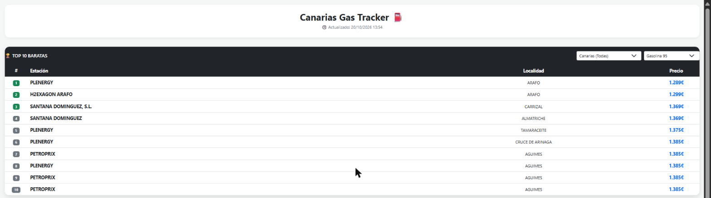

Canarias en datos
Canarias Gas Tracker
Las gasolineras más baratas de las islas, con filtro por isla y por combustible. Se alimenta de la API de precios del Ministerio y se actualiza solo.
HTMLJavaScriptAPI públicaGitHub Actions